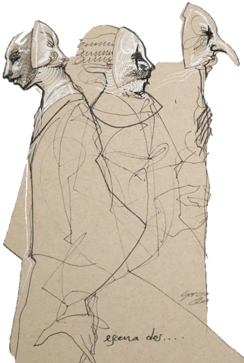
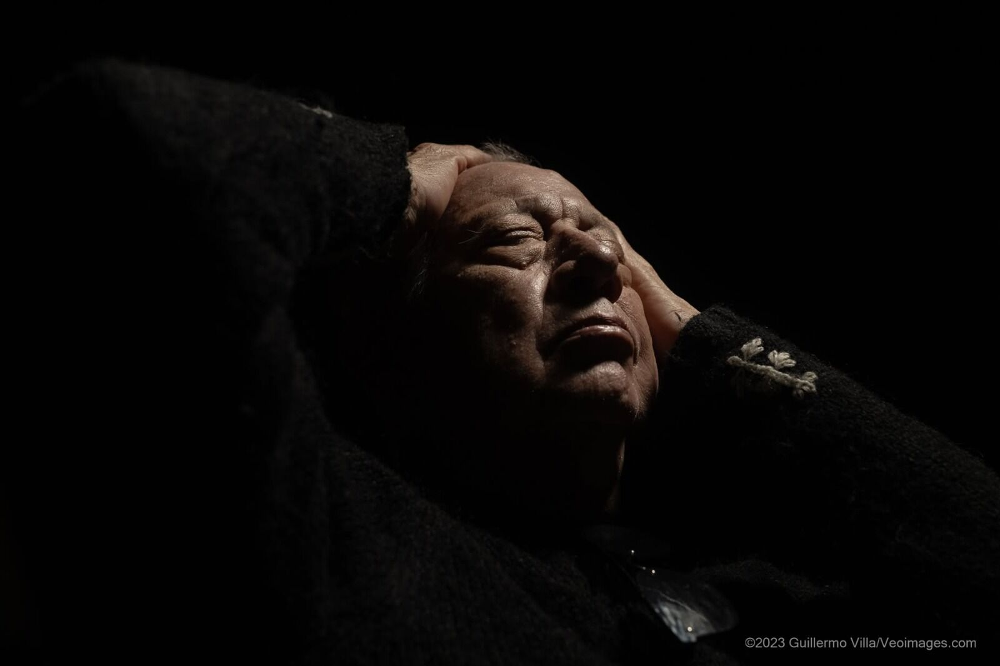
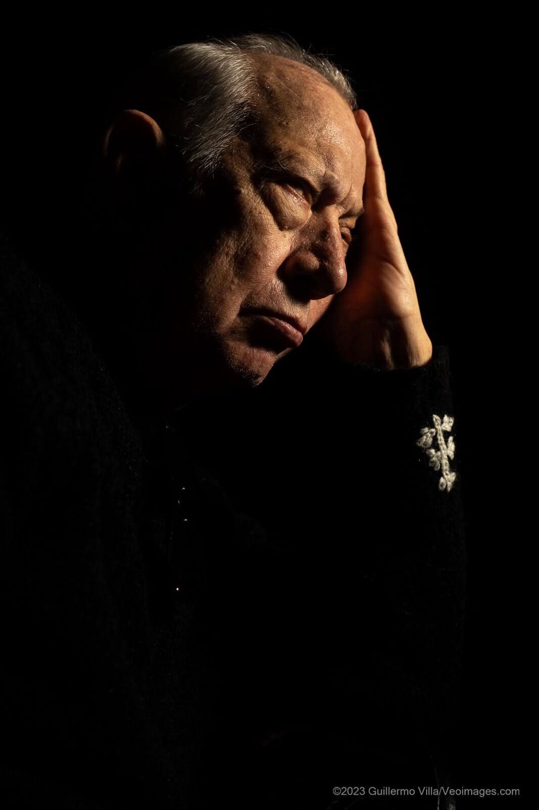
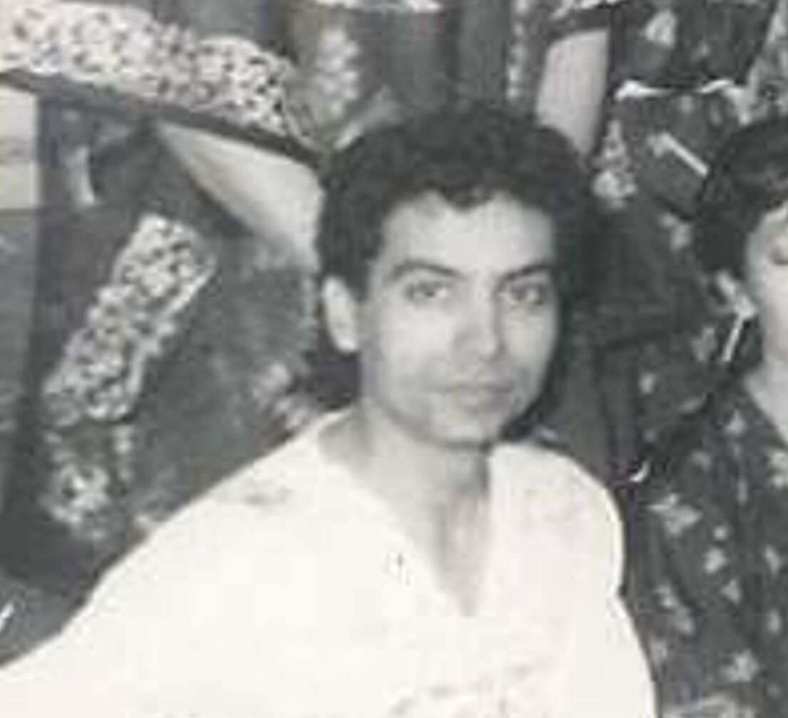
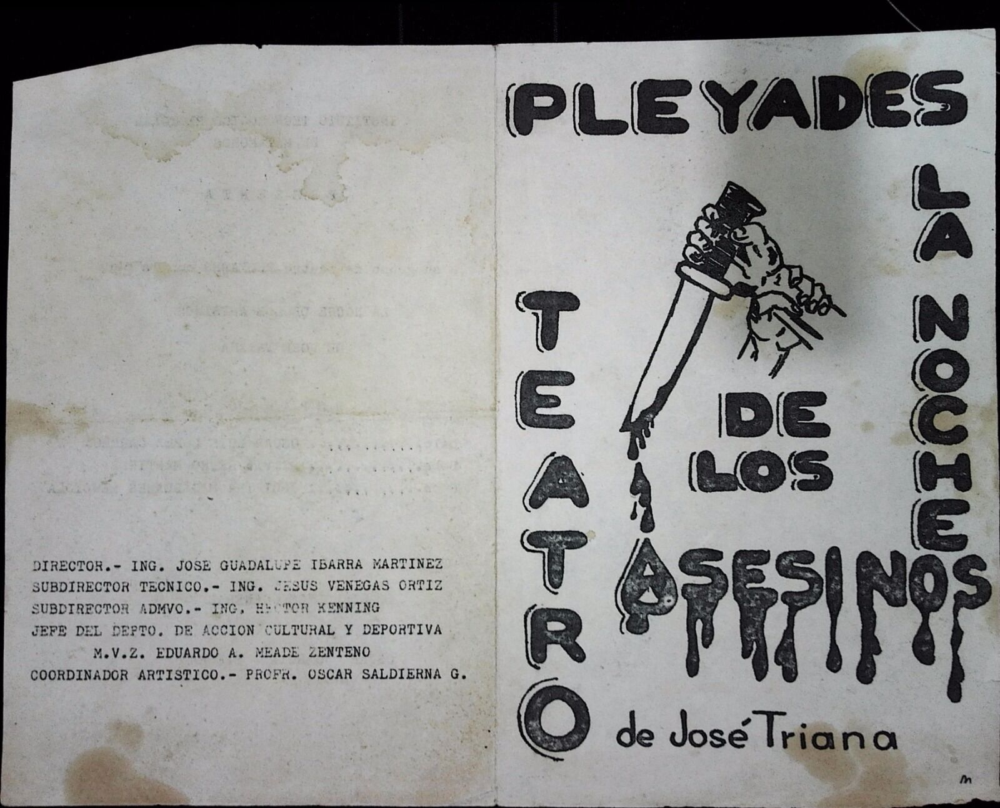
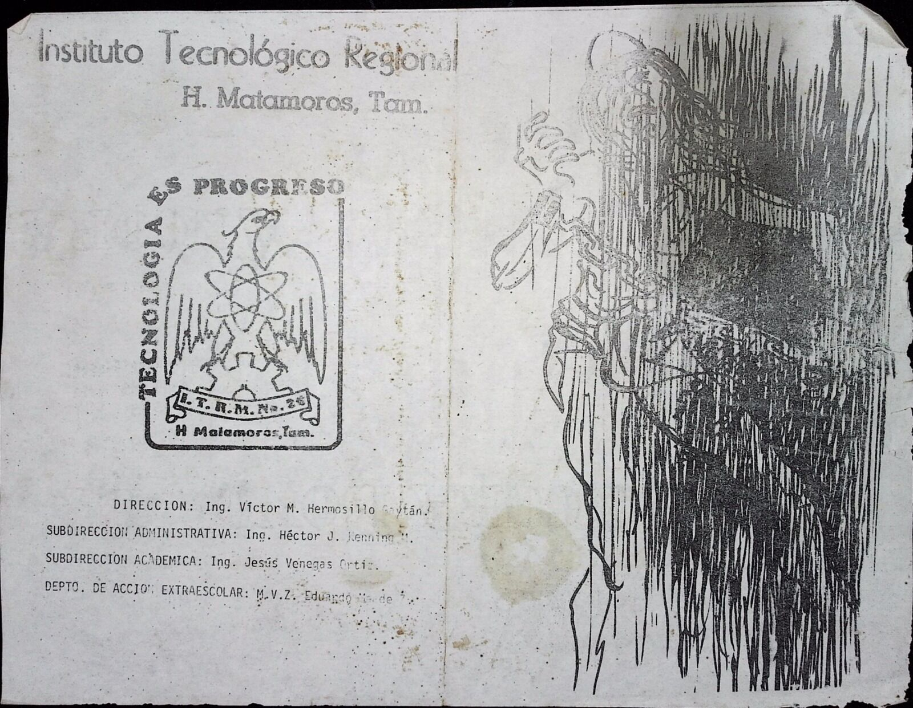
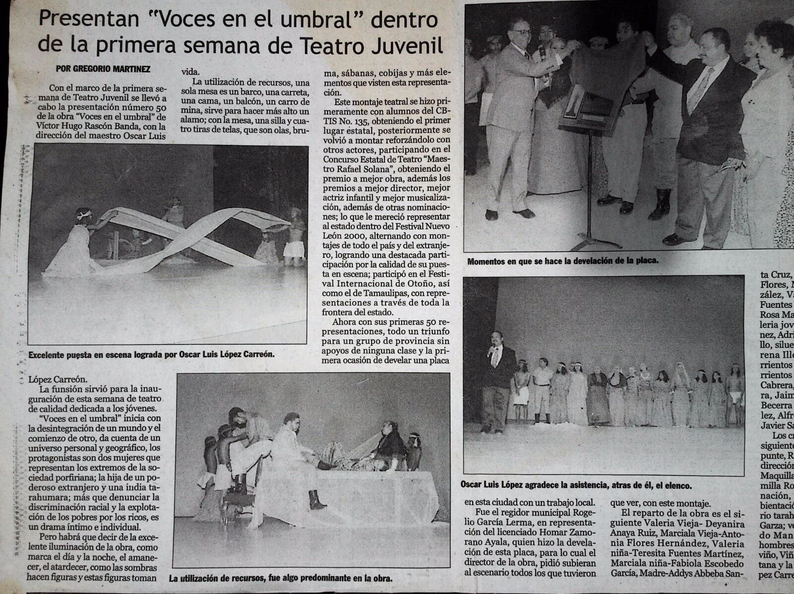
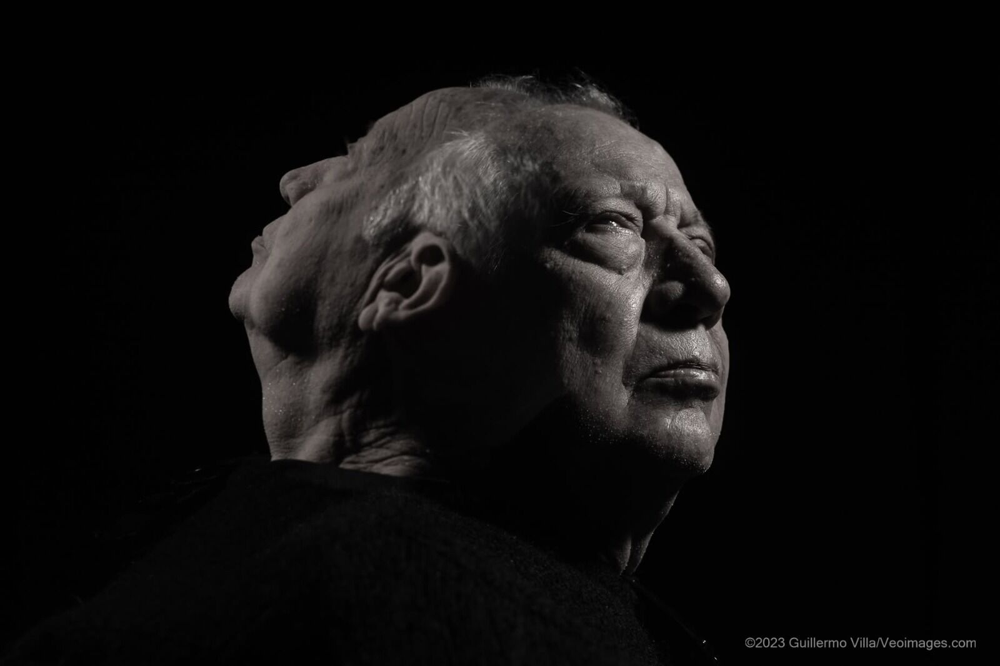

ACTO I · VIDEOTECA
Videoteca
Las entrevistas, en sus palabras.
Cada maestro cuenta su historia frente a la cámara. Los videos vivirán en YouTube y se abrirán desde aquí.

ACTO I · 000 %
Se abre el telón…
ACTO I · ARCHIVO VIVO · HEROICA MATAMOROS, TAMAULIPAS
La memoria del teatro de Matamoros, contada por quienes lo hicieron. Entrevistas, fotos y papeles de sus maestros, reunidos en un archivo que no se apaga.
Cada función se apaga. Lo que queda es la memoria de quienes la hicieron. Memorabilia Teatral Matamorense reúne las voces, los rostros y los papeles de los maestros que le dieron escenario a Matamoros.
Es un proyecto apoyado con una beca del Gobierno de Tamaulipas: entrevistas en video, fotografías y documentos organizados en una carpeta por cada maestro.
02 — TRES ACTOS
ACTO I · VIDEOTECA
Las entrevistas, en sus palabras.
Cada maestro cuenta su historia frente a la cámara. Los videos vivirán en YouTube y se abrirán desde aquí.
ACTO II · FOTOTECA
Los rostros y las funciones.
Fotografías de archivo ordenadas por maestro.



ACTO III · PAPELES
Programas, carteles y reconocimientos.
Lo que se guardó en cajones: lo escaneamos para que no se pierda.


03 — LOS MAESTROS
Cada carpeta guarda fotos, papeles y, pronto, su entrevista completa.
Fondo fotográfico · 19 piezas

FONDO LÓPEZ CARREÓNActor, docente, escritor y director · 32 piezas
Según un programa de mano de su archivo: más de veinticinco años en las artes escénicas; becario del Fondo para la Cultura y las Artes de Tamaulipas en 1999 y 2001.
POR REVELAR
Un maestro más está por llegar
POR REVELAR
Un maestro más está por llegar
POR REVELAR
Un maestro más está por llegar
04 — FOTOTECA
Desliza y camina entre las funciones.
05 — PAPELES
Programas de mano, carteles y reconocimientos, tal como se guardaron.
Pasa el cursor sobre una hoja para leer la letra chica.Desliza para hojear →
06 — ENTREVISTAS
Las entrevistas llegan pronto a YouTube
07 — TRAYECTORIA
La trayectoria de uno de los maestros, contada con sus propios papeles.
1999 · 2001
Grupos
Pleyades (Tecnológico de Matamoros), José Vasconcelos (CBTIS 135), Jean Paul Sartre (Secundaria Técnica 46) y Moviteac Matamoros.
Concurso Estatal de Teatro
XIX emisión: mejor director, mejor iluminación y mejor escenografía. XX emisión: mejor director, mejor actuación grupal y mejor puesta en escena.
2008
Reconocimiento por su participación como responsable de la organización del evento Big Read, en colaboración con la Universidad de Texas en Brownsville.
Hoy

Fotografía: ©2023 Guillermo Villa / Veoimages
09 — EL EQUIPO
Responsable del proyecto: Armando Mancilla, creador escénico, dramaturgo e iluminador, director del Colectivo Teatro de Bolsillo, en Heroica Matamoros.
Con el apoyo de
10 — PARTICIPA
¿Guardas una foto, un programa de mano o el recuerdo de un maestro? Cuéntanoslo: tu pedacito de memoria también es teatro.
Escríbenos a memorabilateatralmatamorense@gmail.com